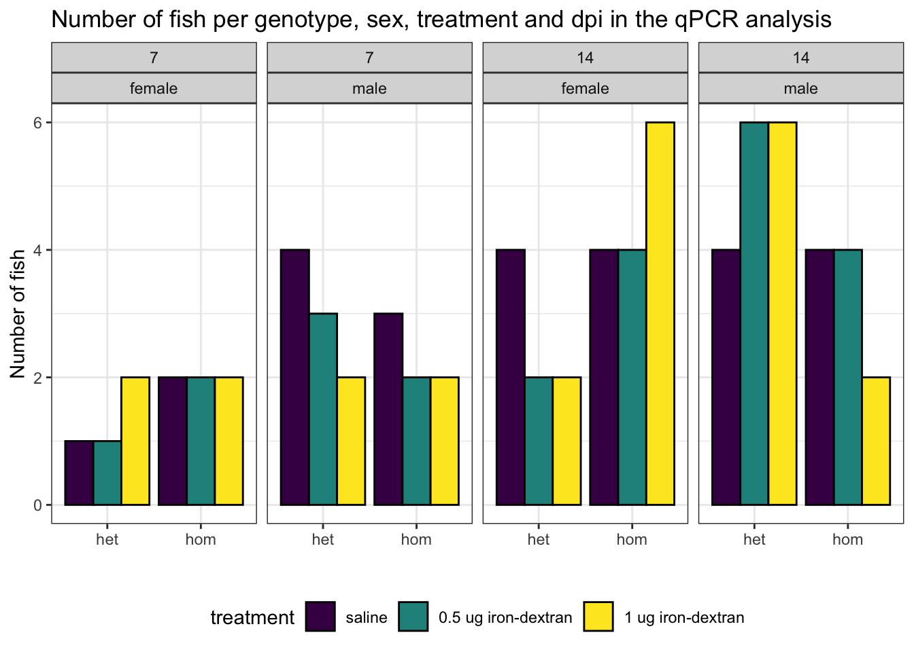
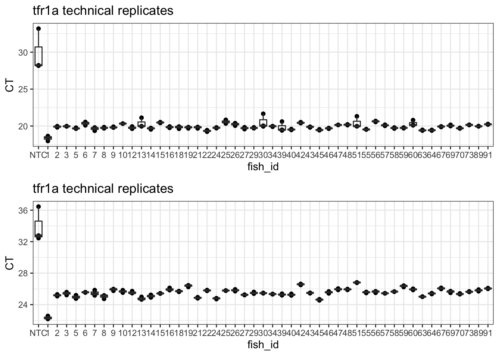
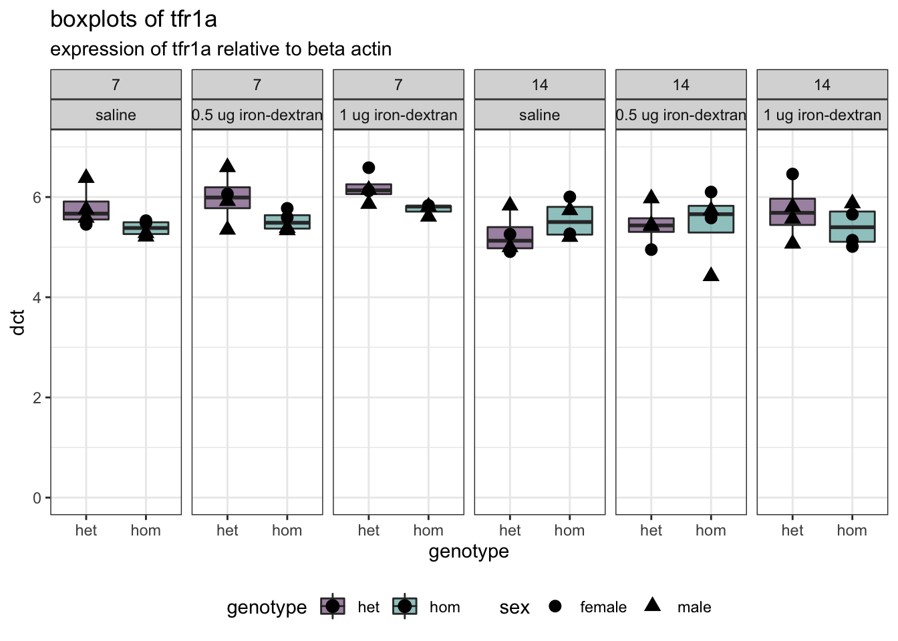

Last updated: 2022-10-25
Checks: 6 1
Knit directory: 2022_MPSII_qPCR_ironSupplementation/
This reproducible R Markdown analysis was created with workflowr (version 1.6.2). The Checks tab describes the reproducibility checks that were applied when the results were created. The Past versions tab lists the development history.
The R Markdown is untracked by Git. To know which version of the R Markdown file created these results, you’ll want to first commit it to the Git repo. If you’re still working on the analysis, you can ignore this warning. When you’re finished, you can run wflow_publish to commit the R Markdown file and build the HTML.
Great job! The global environment was empty. Objects defined in the global environment can affect the analysis in your R Markdown file in unknown ways. For reproduciblity it’s best to always run the code in an empty environment.
The command set.seed(20221025) was run prior to running the code in the R Markdown file. Setting a seed ensures that any results that rely on randomness, e.g. subsampling or permutations, are reproducible.
Great job! Recording the operating system, R version, and package versions is critical for reproducibility.
Nice! There were no cached chunks for this analysis, so you can be confident that you successfully produced the results during this run.
Great job! Using relative paths to the files within your workflowr project makes it easier to run your code on other machines.
Great! You are using Git for version control. Tracking code development and connecting the code version to the results is critical for reproducibility.
The results in this page were generated with repository version a51b267. See the Past versions tab to see a history of the changes made to the R Markdown and HTML files.
Note that you need to be careful to ensure that all relevant files for the analysis have been committed to Git prior to generating the results (you can use wflow_publish or wflow_git_commit). workflowr only checks the R Markdown file, but you know if there are other scripts or data files that it depends on. Below is the status of the Git repository when the results were generated:
Ignored files:
Ignored: .Rproj.user/
Untracked files:
Untracked: analysis/FeDex_tfr1a.Rmd
Untracked: data/2022-10-17_215549_KS_tfr1a_experimental_plate_1_384well.xlsx
Untracked: data/2022-10-18_220606_tfr1b_experimental_plate_1_384well.xlsx
Untracked: data/2022-10-19_201749_irf7_experimental_plate_1_384well.xlsx
Untracked: data/fth1a plate 1-7 analysis 1.xlsx
Untracked: data/metadata.csv
Note that any generated files, e.g. HTML, png, CSS, etc., are not included in this status report because it is ok for generated content to have uncommitted changes.
There are no past versions. Publish this analysis with wflow_publish() to start tracking its development.
library(tidyverse)
library(readxl)
library(here)
library(magrittr)
library(scales)
library(readxl)
library(ggpubr)
library(ggeasy)
library(ggrepel)
library(ggfortify)
library(ggbeeswarm)
library(ggforce)
library(kableExtra)
library(emmeans)
library(car)
# set the default theme for ggplot as theme_bw
theme_set(theme_bw())Here, we are assessing the level of tfr1a transcripts in the brains of 6 month old zebrafish. These zebrafish are either heterozygous (unaffected) or homozygous (MPS-IIIB) for the A603fs mutation in naglu. They were treated with either vehicle (0.85% saline), 0.5 μg iron-dextran or 1 μg of iron-dextran . Then, they were allowed to recover alone in a pair mate tank for either 7 or 14 days. Here, we will determine whether there are significant changes to the expression of tfr1a with any of the combinations described here.
The tfr1a transcript has an iron responsive element in the 3’ untranslated region (3’ UTR), and is predicted to increase under high iron levels.
# read in daa
data <- read_xlsx("data/2022-10-17_215549_KS_tfr1a_experimental_plate_1_384well.xlsx",
sheet = "Results", skip = 40)
meta <- read_csv("data/metadata.csv") %>%
mutate(fish_id = as.character(fish_id),
treatment = factor(treatment,
levels = c("saline",
"0.5 ug iron-dextran",
"1 ug iron-dextran"))
)
data %<>%
dplyr::rename("fish_id" = "Sample Name") %>%
left_join(meta) %>%
dplyr::select(colnames(meta), CT, everything()) # put the metadata first for easy viewingThe following plot below shows the technical replicates of the actin gene. There seem to be some dodgy ones, likely due to pipetting error or some contamination of the RNA. The technical replicate which appears to be the problematic one will be omitted.
# plot technical replicates for actin by plate.
data %>%
dplyr::filter(`Target Name` == "actin") %>%
unique %>%
ggplot(aes(x = fish_id, y = CT)) +
geom_point() +
geom_boxplot(fill = NA) +
geom_label_repel(aes(label = `Well Position`), # only label the variable fish
data = . %>%
dplyr::filter(`Ct SD` > 1)) +
ggtitle("actin technical replicates",
subtitle = "fish are labelled if the standard deviation of the tech reps is > 1")
# plot technical replicates for tfr1a by plate.
data %>%
dplyr::filter(`Target Name` == "tfr1a") %>%
unique %>%
ggplot(aes(x = fish_id, y = CT)) +
geom_point() +
geom_boxplot(fill = NA) +
geom_label_repel(aes(label = `Well Position`), # only label the variable fish
data = . %>%
dplyr::filter(`Ct SD` > 1)) +
ggtitle("tfr1a technical replicates",
subtitle = "fish are labelled if the standard deviation of the tech reps is > 1")data_clean <- data %>%
unique() %>%
dplyr::filter(
fish_id != "20",
!(`Well Position` %in% c("C1", "E13", "I1", "K13", "M1", # actin outliers
"C4", "E4", "G4", "I4", "K4", "M4")) # tfr1a outliers
)# plot technical replicates for actin by plate.
data_clean %>%
dplyr::filter(`Target Name` == "actin") %>%
unique %>%
ggplot(aes(x = fish_id, y = CT)) +
geom_point() +
geom_boxplot(fill = NA) +
ggtitle("tfr1a technical replicates",
subtitle = "after omitting outliers") # plot technical replicates for tfr1a by plate.
data_clean %>%
dplyr::filter(`Target Name` == "tfr1a") %>%
unique %>%
ggplot(aes(x = fish_id, y = CT)) +
geom_point() +
geom_boxplot(fill = NA) +
ggtitle("tfr1a technical replicates",
subtitle = "after omitting outliers")
Expression of tfr1a appears to increase with higher amounts of iron.
data_clean %>%
unique() %>%
dplyr::select(colnames(meta), `Target Name`, CT) %>%
dplyr::filter(genotype %in% c("het", "hom")) %>% # only select fish of interest
group_by(fish_id, `Target Name`) %>%
mutate(aveCT = mean(CT)) %>%
dplyr::select(-CT) %>%
unique %>%
spread(`Target Name`, aveCT) %>%
mutate(dct = tfr1a - actin ) %>%
ggplot(aes(x = genotype, y = dct, fill = genotype)) +
geom_boxplot(aes(fill = genotype),
outlier.shape = NA) +
geom_point(size =3,
aes(shape = sex)) +
scale_fill_viridis_d(begin = 0.5) +
facet_wrap(~dpi+treatment, nrow = 1) +
ggtitle("tfr1a",
subtitle = "expression of tfr1a relative to beta actin") 
data_clean %>%
unique() %>%
dplyr::select(colnames(meta), `Target Name`, CT) %>%
dplyr::filter(genotype %in% c("het", "hom")) %>% # only select fish of interest
group_by(fish_id, `Target Name`) %>%
mutate(aveCT = mean(CT)) %>%
dplyr::select(-CT) %>%
unique %>%
spread(`Target Name`, aveCT) %>%
mutate(dct = tfr1a - actin,
dpi = case_when(
dpi == "7" ~ "7 dpi",
dpi == "14" ~ "14 dpi"
) %>%
factor(levels = c("7 dpi", "14 dpi")),
sex = factor(sex, levels = c("female", "male"))
) %>%
ggplot(aes(x = treatment, y = dct, fill = genotype, colour = genotype)) +
stat_summary(fun=mean, # add mean bar plot
alpha = 0.5,
geom="bar",
position = "dodge") +
geom_point(
alpha=0.9,
position = position_jitterdodge(jitter.width = .1, dodge.width = 1),
size = 3,
) +
facet_wrap(~dpi, nrow = 1) +
scale_fill_viridis_d(end = 0.5) +
scale_colour_viridis_d(end = 0.5) +
ggtitle("tfr1a",
subtitle = "expression of tfr1a relative to beta actin") While the effect of genotypetreatmentdpi is not significant, this is likely due to being very underpowered.
fit <-
data_clean %>%
unique() %>%
dplyr::select(colnames(meta), `Target Name`, CT) %>%
dplyr::filter(genotype %in% c("het", "hom")) %>% # only select fish of interest
group_by(fish_id, `Target Name`) %>%
mutate(aveCT = mean(CT)) %>%
dplyr::select(-CT) %>%
unique %>%
spread(`Target Name`, aveCT) %>%
mutate(dct = tfr1a - actin ) %>%
lm(dct ~ genotype*treatment*dpi,
data = . )
Anova(fit) %>%
kable %>%
kable_styling(full_width = F)| Sum Sq | Df | F value | Pr(>F) | |
|---|---|---|---|---|
| genotype | 0.5206589 | 1 | 2.8657378 | 0.0993688 |
| treatment | 0.5774332 | 2 | 1.5891133 | 0.2184817 |
| dpi | 0.9882581 | 1 | 5.4394314 | 0.0255655 |
| genotype:treatment | 0.2001709 | 2 | 0.5508764 | 0.5813608 |
| genotype:dpi | 0.5842027 | 1 | 3.2154866 | 0.0815900 |
| treatment:dpi | 0.0751796 | 2 | 0.2068965 | 0.8140911 |
| genotype:treatment:dpi | 0.1719336 | 2 | 0.4731665 | 0.6269536 |
| Residuals | 6.3589427 | 35 | NA | NA |
sessionInfo()R version 4.0.2 (2020-06-22)
Platform: x86_64-apple-darwin17.0 (64-bit)
Running under: macOS Mojave 10.14.3
Matrix products: default
BLAS: /Library/Frameworks/R.framework/Versions/4.0/Resources/lib/libRblas.dylib
LAPACK: /Library/Frameworks/R.framework/Versions/4.0/Resources/lib/libRlapack.dylib
locale:
[1] en_AU.UTF-8/en_AU.UTF-8/en_AU.UTF-8/C/en_AU.UTF-8/en_AU.UTF-8
attached base packages:
[1] stats graphics grDevices utils datasets methods base
other attached packages:
[1] car_3.0-11 carData_3.0-4 emmeans_1.6.1 kableExtra_1.3.4
[5] ggforce_0.3.3 ggbeeswarm_0.6.0 ggfortify_0.4.12 ggrepel_0.9.1
[9] ggeasy_0.1.3 ggpubr_0.4.0 scales_1.1.1 magrittr_2.0.1
[13] here_1.0.1 readxl_1.3.1 forcats_0.5.1 stringr_1.4.0
[17] dplyr_1.0.7 purrr_0.3.4 readr_1.4.0 tidyr_1.1.3
[21] tibble_3.1.2 ggplot2_3.3.5 tidyverse_1.3.1
loaded via a namespace (and not attached):
[1] TH.data_1.0-10 colorspace_2.0-2 ggsignif_0.6.2 ellipsis_0.3.2
[5] rio_0.5.27 rprojroot_2.0.2 estimability_1.3 fs_1.5.0
[9] rstudioapi_0.13 farver_2.1.0 fansi_0.5.0 mvtnorm_1.1-2
[13] lubridate_1.7.10 xml2_1.3.2 codetools_0.2-18 splines_4.0.2
[17] knitr_1.33 polyclip_1.10-0 jsonlite_1.7.2 workflowr_1.6.2
[21] broom_0.7.8 dbplyr_2.1.1 compiler_4.0.2 httr_1.4.2
[25] backports_1.2.1 assertthat_0.2.1 Matrix_1.3-4 cli_3.0.0
[29] later_1.2.0 tweenr_1.0.2 htmltools_0.5.1.1 tools_4.0.2
[33] coda_0.19-4 gtable_0.3.0 glue_1.4.2 Rcpp_1.0.7
[37] cellranger_1.1.0 jquerylib_0.1.4 vctrs_0.3.8 svglite_2.0.0
[41] xfun_0.24 openxlsx_4.2.4 rvest_1.0.0 lifecycle_1.0.0
[45] rstatix_0.7.0 MASS_7.3-54 zoo_1.8-9 hms_1.1.0
[49] promises_1.2.0.1 sandwich_3.0-1 yaml_2.2.1 curl_4.3.2
[53] gridExtra_2.3 sass_0.4.0 stringi_1.6.2 highr_0.9
[57] zip_2.2.0 rlang_0.4.11 pkgconfig_2.0.3 systemfonts_1.0.2
[61] evaluate_0.14 lattice_0.20-44 labeling_0.4.2 tidyselect_1.1.1
[65] R6_2.5.0 generics_0.1.0 multcomp_1.4-17 DBI_1.1.1
[69] pillar_1.6.1 haven_2.4.1 foreign_0.8-81 withr_2.4.2
[73] survival_3.2-11 abind_1.4-5 modelr_0.1.8 crayon_1.4.1
[77] utf8_1.2.1 rmarkdown_2.9 grid_4.0.2 data.table_1.14.0
[81] git2r_0.28.0 reprex_2.0.0 digest_0.6.27 webshot_0.5.2
[85] xtable_1.8-4 httpuv_1.6.1 munsell_0.5.0 beeswarm_0.4.0
[89] viridisLite_0.4.0 vipor_0.4.5 bslib_0.2.5.1